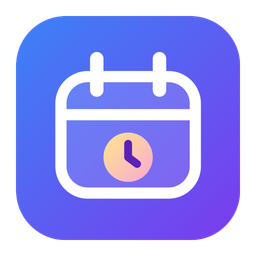

CV Studio Apps
Alle Apps der Plattform als Programm für Windows und Mac, und als App für iPhone, iPad und Android. Funktionieren auch ohne Internet, dein Lebenslauf bleibt auf deinem Gerät, bis du ihn online stellst.
- Windows 10/11
- Mac (Apple-Chip & Intel)
- iPhone & iPad
- Android
- Lokale KI (kostenlos)
Wähle deine App
Jede App hat ihre eigene Seite mit Downloads für Windows und Mac sowie der Installation für das Handy.

Kairos KalenderTermine und BuchungenDownload →So kommt eine App auf dein Gerät
- Windows und Mac: Download auf der Seite der App wählen, installieren.
- iPhone und iPad: in Safari öffnen → Teilen → Zum Home-Bildschirm.
- Android: in Chrome öffnen → App installieren.
Warnung beim ersten Start
Die Apps sind noch nicht von Apple oder Microsoft signiert. Auf jeder App-Seite steht Schritt für Schritt, wie du sie einmalig freigibst (Mac: Systemeinstellungen → Datenschutz & Sicherheit → Trotzdem öffnen, Windows: Trotzdem ausführen).
Lokale KI, auch offline
Auf Windows und Mac richtet die App auf Wunsch eine kostenlose lokale KI (Ollama) ein. Sie läuft im Hintergrund, braucht keinen Schlüssel und deine Texte verlassen das Gerät nicht. Auf iPhone, iPad und Android ist das technisch nicht möglich, dort läuft die KI online.